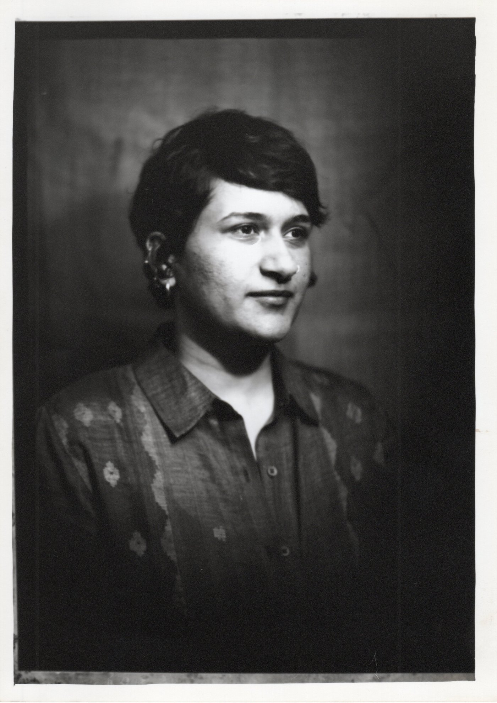
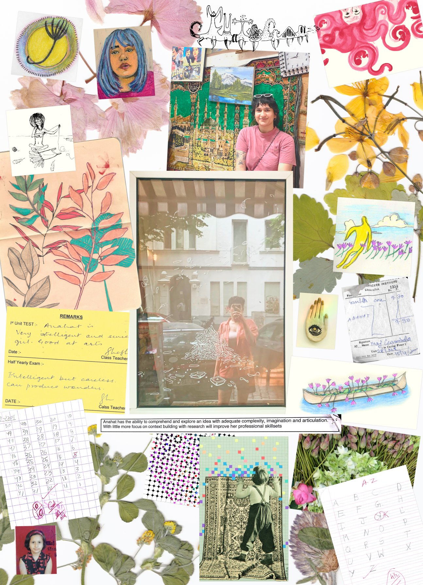

Photographed by: Thomas Nitz, Darkbox Camera, Berlin
Anahat Kaur is an anti-disciplinaryIt basically boils down to radical collaboration, moving beyond the boundaries separating academic disciplines in order to collaborate across difference. ↗ freelance designer based in Berlin. She works across identity systems, publications, and digital tools for projects in systems change, governance, and cultural revival, with a focus on visual sensemaking: making complex processes legible so people can understand and act on them together.